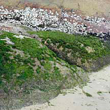
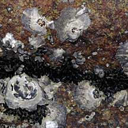
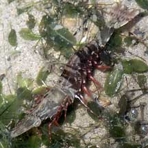

|
|
| index of concepts |
| tides | intertidal zone | zonation | ecosystems |
| Zonation updated Dec 2019 Plants and
animals are NOT randomly distributed on our intertidal zone. Each
living thing is generally found in a place that best suits it. Thus
as you move from place to place on our shores, you may observe a
change in the kind of plants and animals that you see. More
about the intertidal. |
 Zones are quite obvious on a rocky shore with bands of different kinds of plants and animals. |
 Different kinds of animals are found in different niches where they do best. |
 Our favourite shrimps grow up in seagrasses meadows before venturing out as adults into other ecosystems. |
At low tide, areas that are more often covered in water may be exposed
for a short time. Here, you might see a greater variety of plants
and animals. Some animals, in fact, function best during this window
of low tide. These include fiddler
crabs, sand
bubbler crabs and soldier
crabs. Other less hardy animals simply hunker down and wait
until the tide comes back in. Many hide under the sand, in holes
and crevices of rocks and coral rubble, or shelter in pools. The
spectrum of life: The different shore ecosystems are
found in different zones: such as mangroves, seagrasses, sandy shores,
rocky shores and corals reefs. The boundaries of each ecosystem
are not clearly marked. Overlaps occur as one ecosystem gradually
changes into adjoining ecosystems. The ecosystems impact one another
and a shore with many different ecosystems tends to be richer in
biodiversity. |
Links
|